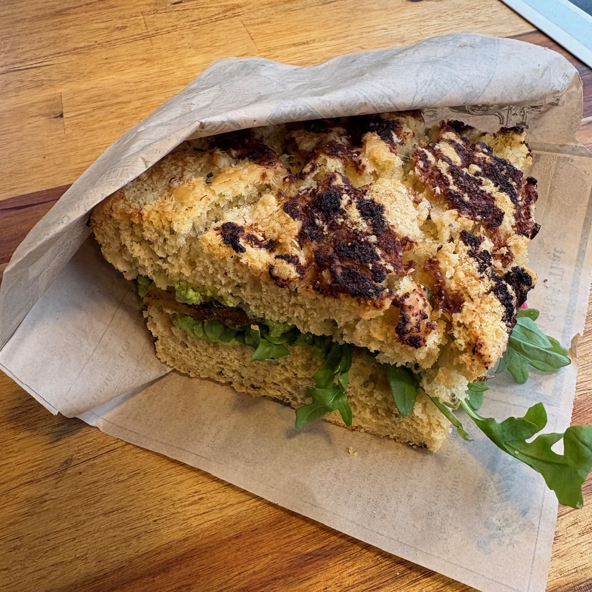
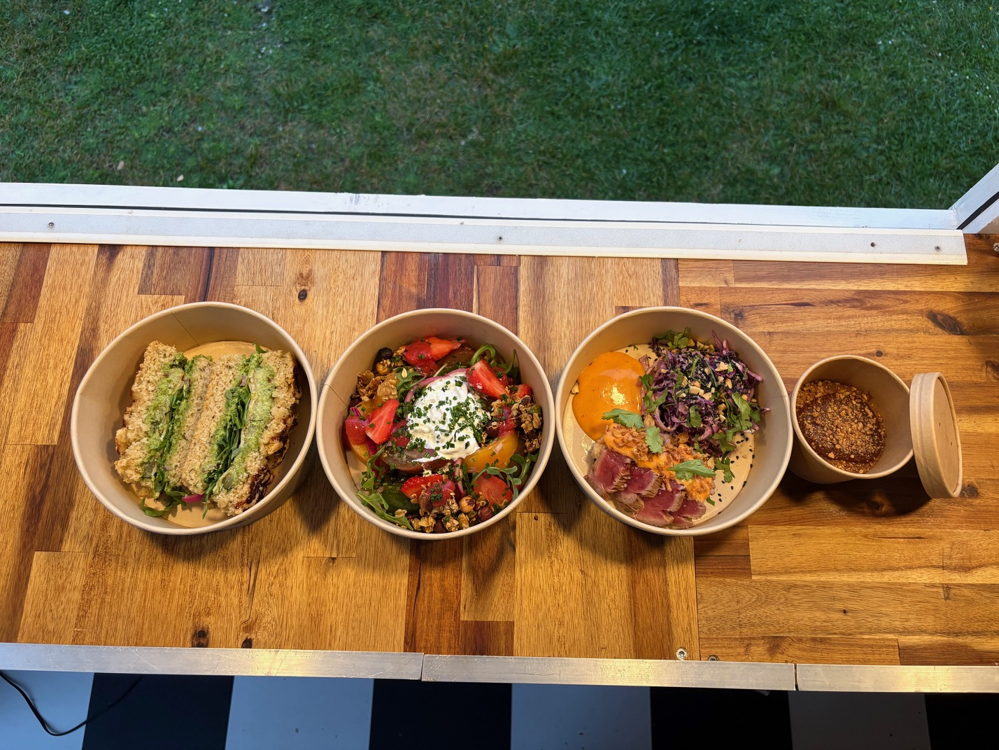

Une cuisine mobile, ancrée, créative et responsable.
Retrouvez KB chaque semaine à travers la Bretagne.

Une carte vivante pensée selon les saisons et les arrivages.

Consultez les services et événements à venir.
KB mêle cuisine bistronomique, produits locaux et inspirations glanées au fil des voyages. Une expérience chaleureuse pensée autour de la saisonnalité, du goût et du partage.





Mariages, événements d’entreprise, anniversaires ou soirées privées.
Sourcing régional et producteurs partenaires.
Préparations artisanales réalisées chaque semaine.
Une carte évolutive selon les arrivages.
Une cuisine pensée autour du partage et de la convivialité.